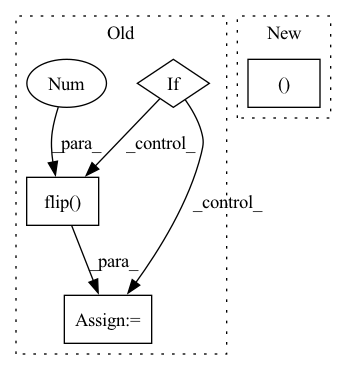

Pattern ID :1108
Before Change
data_time_m.update(time.time() - end)
if not args.prefetcher:
input, target = input.cuda(), target.cuda()
if args.mixup > 0.:
lam = 1.
if not args.mixup_off_epoch or epoch < args.mixup_off_epoch:
lam = np.random.beta(args.mixup, args.mixup)
input = input.mul(lam).add_(1 - lam, input.flip(0 ) )
target = mixup_target(target, args.num_classes, lam, args.smoothing)
output = model(input)After Change
if not args.prefetcher:
input, target = input.cuda(), target.cuda()
if args.mixup > 0.:
input, target = mixup_batch(
input, target,
alpha=args.mixup, num_classes=args.num_classes, smoothing=args.smoothing,
disable=args.mixup_off_epoch and epoch >= args.mixup_off_epoch)In pattern: SUPERPATTERN
Frequency: 3
Non-data size: 4
Instances Fragment ID: 5591869
Project Name: feng-lab/pytorch-image-models
Commit Name: 232ab7fb12ba082e6d4039c7a7c7f2701caa0a71
Time: 2019-12-20
Author: rwightman@gmail.com
File Name: train.py
M Class Name: AnonimousClass
N Class Name: AnonimousClass
M Method Name: train_epoch(11)
N Method Name: train_epoch(11)
M Parent Class:
N Parent Class:
M File Name: train.py
N File Name: train.py
M Start Line: 454
M End Line: 461
N Start Line: 470
N End Line: 476
Before Change
if len(frames) > 0: img = frames[-1]
else: img = np.zeros((112, 112, 3), dtype=np.uint8)
if crop_augment: pass // TODO: implement random crop
if mirror_augment: img = cv2.flip( img, 1 )
// TODO: add temporal augmentation (repeat, deletion)
frames.append(img)
else:
cap = cv2.VideoCapture(path)After Change
if len(frames) > 0: img = frames[-1]
else: img = np.zeros((112, 112, 3), dtype=np.uint8)
if crop_augment:
img = cv2.resize(img, (128, 128 ))
if is_training:
crop_x = random.randint(0, 16)
crop_y = random.randint(0, 16) Fragment ID: 5591868
Project Name: sailordiary/m3f.pytorch
Commit Name: 639f60090b44d3fdb3b40ae0df467ffed523da9e
Time: 2020-02-01
Author: me@sailorzhang.com
File Name: models/dataset.py
M Class Name: AnonimousClass
N Class Name: AnonimousClass
M Method Name: load_video(7)
N Method Name: load_video(6)
M Parent Class:
N Parent Class:
M File Name: models/dataset.py
N File Name: models/dataset.py
M Start Line: 50
M End Line: 75
N Start Line: 47
N End Line: 70
Before Change
// Processing time steps
h = self.ligru_cell(w)
if self.bidirectional:
h_f, h_b = h.chunk(2, dim=1)
h_b = h_b.flip(0 )
h = torch.cat([h_f, h_b], dim=2)
return h
After Change
x = ligru_lay(x)
x = x.transpose(0,1)
return x, 0
class liGRU_layer(torch.jit.ScriptModule):
def __init__( Fragment ID: 5591871
Project Name: speechbrain/speechbrain
Commit Name: c4bf280dd72034847589ca5466253e879386e735
Time: 2020-05-01
Author: mirco.ravabelli@gmail.com
File Name: speechbrain/nnet/architectures.py
M Class Name: liGRU
N Class Name: liGRU
M Method Name: forward(2)
N Method Name: forward(2)
M Parent Class: torch.jit.ScriptModule
N Parent Class: torch.jit.ScriptModule
M File Name: speechbrain/nnet/architectures.py
N File Name: speechbrain/nnet/architectures.py
M Start Line: 1326
M End Line: 1346
N Start Line: 1286
N End Line: 1291